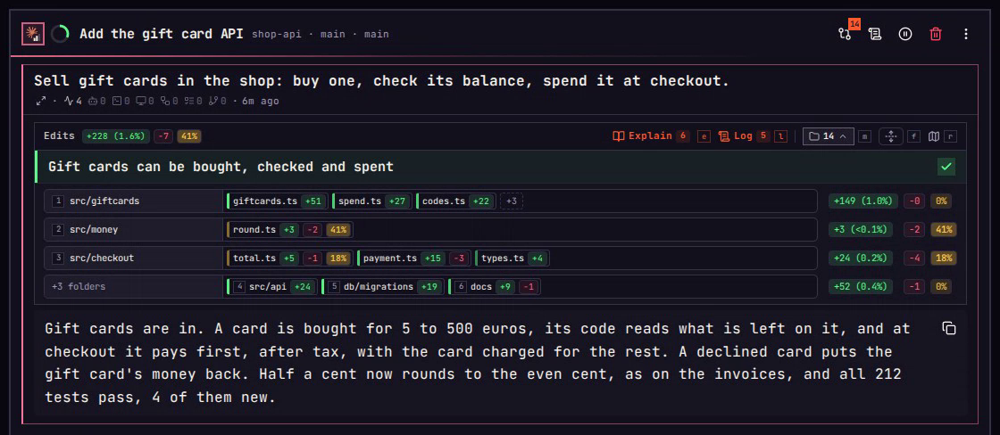

Edits
What a turn changed and what it reaches, before you read a line of the diff.
A coding agent can change fourteen files in one turn and say it went well. Reading every diff takes longer than the turn did, and a skim lets the one line that matters slip by. Each part of the Edits box under a turn guards against one way the mind slips.
On a phone, each key on this page is a tap.
01Goal
The trap
“Fourteen files changed. It got a lot done.”
Effort heuristic. How much was done stands in for whether it worked.
The goal, then the files.
Under the Edits line stands the turn's goal in one sentence, with a tick when the agent says it got there and a cross when it says it did not. A laptop draws the 14 files under it, a tray per folder. A phone keeps them behind their count until it is tapped.

02Folders
The trap
“Fourteen files. I'll skim them.”
Information overload. Fourteen names in a row read as one blur, and the eye stops at the first few.
Three trays, the rest folded.
The change is drawn a tray per folder. Three folders get one each: the most work, the most reach, then the next by reach. The other three share a fourth. f, or the +3 folders tray, gives every folder its own, and m, or the 14, puts them all away. A phone opens the trays from the 14.
f Every folderm Put away
03Weight
The trap
“The biggest edit is the risky one.”
Anchoring. The first number you read, the size of an edit, becomes the measure of its risk.
Weight is what stands on it.
src/giftcards took 149 new lines, and nothing in the shop stands on them yet. src/money changed five lines in round.ts, and 41% of the shop stands on them, so they carry the amber. 2, or a tap on the folder, lists its files. 1, or a tap on round.ts, opens the diff, and q or Back returns.
1–9 Openq Back
04Reach
The trap
“Only these files can break.”
What you see is all there is. The files on screen feel like the whole story, and the code that calls them is out of sight.
The map shows who calls it.
Enter, or the map mark beside an open folder, draws src/money on the map. round.ts stands at the left, and the 21 files that call what changed stand at the right, each tied to it. r opens the whole turn on the map from the Edits line.
Enter The folder on the map
05Why
The trap
“I can see why it changed.”
Illusion of explanatory depth. Reading what changed feels like knowing why, until you have to say it.
The why, step by step.
e, or Explain's Open on a phone, opens the turn's explanation: six steps the agent wrote, each with what changed, a drawing and the lines behind it. n, or the arrow, goes to the next. Step 5 says why half a cent now goes to the even cent, and that every price in the shop goes through it. On a laptop the six are listed at the left, and 5 jumps there.
e Explainn Nextq Close
06Log
The trap
“I remember what came before.”
Recency bias. The last turn fills your head, and the turn that asked for it is forgotten.
The Log keeps every turn.
l, or the Log mark, opens the spawn as chapters: Checkout with two turns, then Gift cards with three. 4, or a tap on Settled the rounding, opens the turn before this one. There you asked to keep amounts in cents and send half a cent to the even cent, which is why round.ts changed.
l Log1–9 Open
Six traps
Your mind slips. Edits catches it.
- 01 Goal
“It got a lot done.”Effort heuristicThe goal first - 02 Folders
“Fourteen files. I'll skim them.”Information overloadThree traysf m - 03 Weight
“The biggest edit is the risky one.”AnchoringWhat stands on it1–9 - 04 Reach
“Only these files can break.”What you see is all there isThe mapEnter r - 05 Why
“I can see why it changed.”Illusion of explanatory depthExplain, step by stepe - 06 Log
“I remember what came before.”Recency biasThe Logl
A file's block opens its diff, and a tray's +N lists the rest of that folder.
Every key and button
Each press, and its key.
The round above uses a few of them. Here is all of the Edits box and the screens it opens: what you press, the key that does the same, and what happens. Keys need a keyboard; on a phone or tablet the buttons are taps.
On the Edits line
- Explain, or Open on a phoneeOpens the turn's explanation on its first step.
- LoglOpens the Log on this turn.
- The file countmPuts the folders and their files away, or brings them back. A phone starts with them away.
- EveryfEvery folder in its own tray and every file drawn, or folded back to three trays.
- MaprOpens the turn's change on the map.
In the trays
- A folder's name1–9Lists that folder's changed files, numbered from 1.
- A file's blockOpens that file's diff.
- +N in a trayLists the rest of that folder's files.
- +N foldersfGives every folder its own tray.
Inside a folder
- A file1–9Opens its diff.
- ‹qBack to every folder.
- MapEnterOpens this folder on the map.
- +N morefShows every file in the folder past the first eight.
- foldfFolds the folder back to its first eight files.
In the explanation
- The right arrownThe next step.
- The left arrowpThe step before it.
- A step under Scenes, on a laptop1–9Jumps to that step.
- Ctrl+NScrolls the step down.
- Ctrl+PScrolls the step up.
- Closeq EscBack to the turn.
In the Log, on an open turn
- A turn1–9Opens it: what was asked, what it did, and its presses.
- ExplaineOpens that turn's explanation, or, on a turn that changed files, asks the agent for one.
- ChangesdOpens what that turn changed, on a turn that changed files.
- Full turnEnterEverything the turn did.
- Full promptvThe whole prompt.
- The starbStars the turn, or takes its star off.
- Write itwWrites the turn's Log line, where it has none.
- qShuts the open turn, then closes the Log.
On the map
- qBack out one step.
Recorded in imba. Every spawn, repository and person in these films is made up.